Hermes는 무엇이 다른가요
영상은 Hermes Agent를 'AI 직원이 혼자 배우는 모델'로 소개해요. 썸네일 문구도 그대로 "AI 직원이 혼자 배운다고?!"예요. 발표자가 말하는 장점은 세 가지예요. 일을 시키면 스킬을 스스로 익혀 다음에 더 잘하고, 공유 메모리로 다른 AI와 자료를 주고받고, 내가 자리를 비운 사이에도 컴퓨터를 조작해 자료를 모은 뒤 텔레그램으로 보고해요.
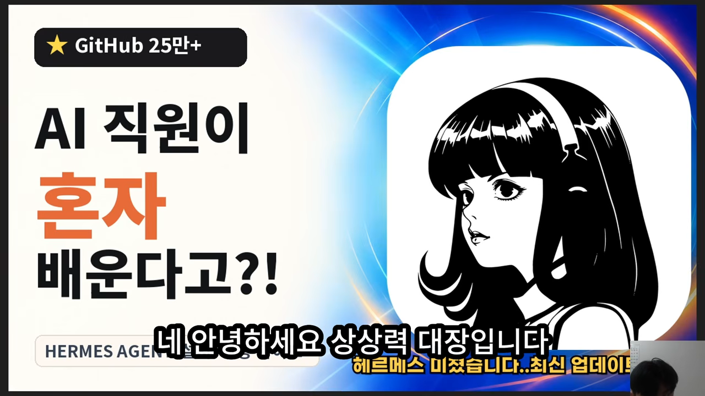
발표자는 질문에 답만 하는 챗봇을 '1세대'라고 불러요. 차이는 일이 끝난 뒤에 남는 것이에요. 챗봇은 대화가 끝나면 기억이 사라지지만, Hermes는 해 본 일을 스킬로 남겨 다음 일에 다시 써요. 영상은 이 순환을 '자기 학습 루프' 또는 '셀프 루프 엔지니어링'이라고 불러요.
발표자가 블로그에 쓴 문제 제기도 같은 이야기예요. 가운데 문단이 '기억이 없으면 다음 대화 시작 때 새로 업무를 진행해야 한다'는 문제이고, 아래 문단이 해법으로 내세운 공유 메모리예요. 헤르메스가 조사한 자료를 클로드가 이어받아 글을 쓰고, 그 글을 비디오 에이전트가 영상으로 만드는 식이에요. 발표자는 이렇게 여러 에이전트가 기억을 나눠 쓰는 구조를 Agent OS(Operating System)라고 불러요.
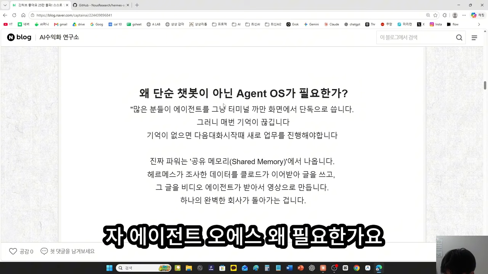
GitHub에서 확인하고 클로드 코드에 설치 맡기기
설치는 GitHub에서 시작해요. hermes로 저장소를 검색하면 맨 위에 NousResearch/hermes-agent가 나와요. 설명은 'The agent that grows with you', 언어는 Python, 별은 253k예요. 제목의 '25만 스타'가 이 숫자예요. 발표자는 저장소 안의 agent, docker 같은 폴더는 몰라도 되고 이 링크만 있으면 된다고 말해요.
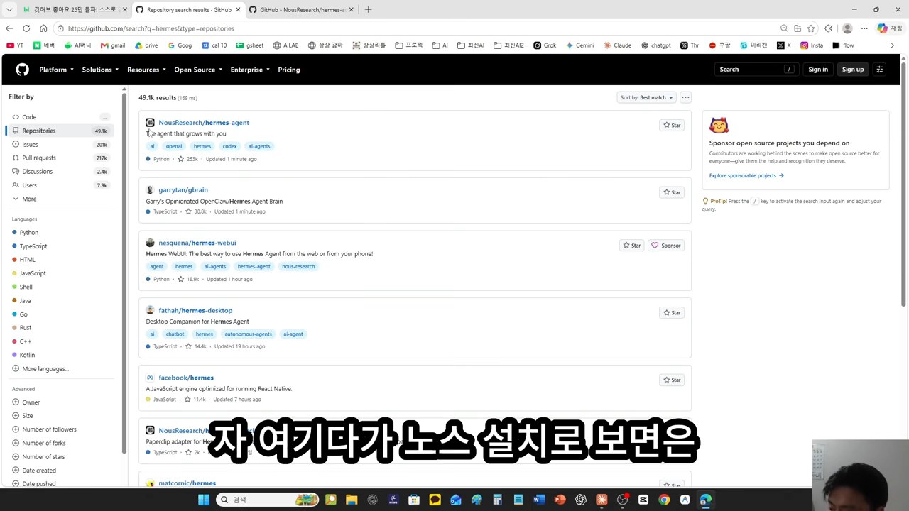
터미널이 어렵다면 클로드 코드에 맡기기
발표자는 PowerShell 같은 터미널이 어려운 사람에게 다른 길을 권해요. ChatGPT나 Claude를 구독 중이라면 데스크톱 앱을 쓰는 거예요. 여기서는 클로드 코드를 기준으로 보여 줘요. 바탕화면에 claude hermes test 폴더를 만들고, 앱에서 이 폴더를 로컬 폴더로 연결해요. 입력창 위의 '로컬 · claude hermes test' 표시가 연결됐다는 뜻이에요. 폴더를 신뢰하느냐고 물으면 허용해서, 클로드 코드가 이 폴더에 자료를 만들 수 있게 해요.
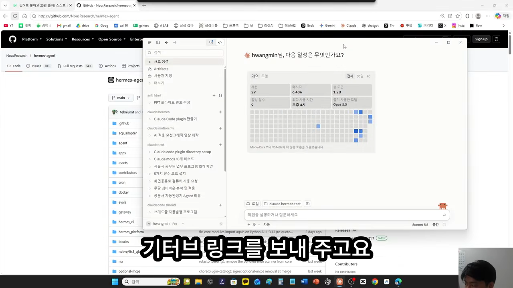
보낸 메시지는 GitHub 링크와 "이걸로 hermes 에이전트 설치해줘" 한 줄이에요. 클로드 코드는 README에서 공식 설치 방법이 PowerShell 원라이너라는 걸 찾아요. 원격 스크립트를 바로 실행하지 않고, 먼저 내려받아 무슨 일을 하는지 확인한다고 적어요. 발표자는 앞으로는 이런 명령어를 몰라도 "설치해 줘"라고 정확히 말하는 것만으로 설치까지 끝나게 될 거라고 봐요.
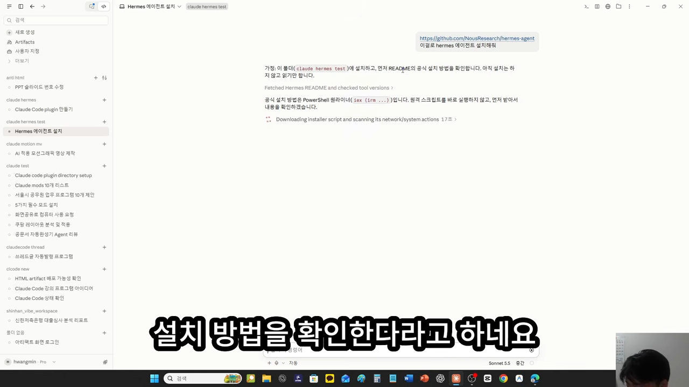
PowerShell로 설치하고 처음 실행하기
직접 설치할 때는 Windows PowerShell에 아래 한 줄을 넣어요. 발표자 블로그에 정리된 명령과 같고, 실행하면 'Hermes Agent Installer' 상자가 뜨면서 git 같은 필요한 도구부터 설치해요.
iex (irm https://hermes-agent.nousresearch.com/install.ps1)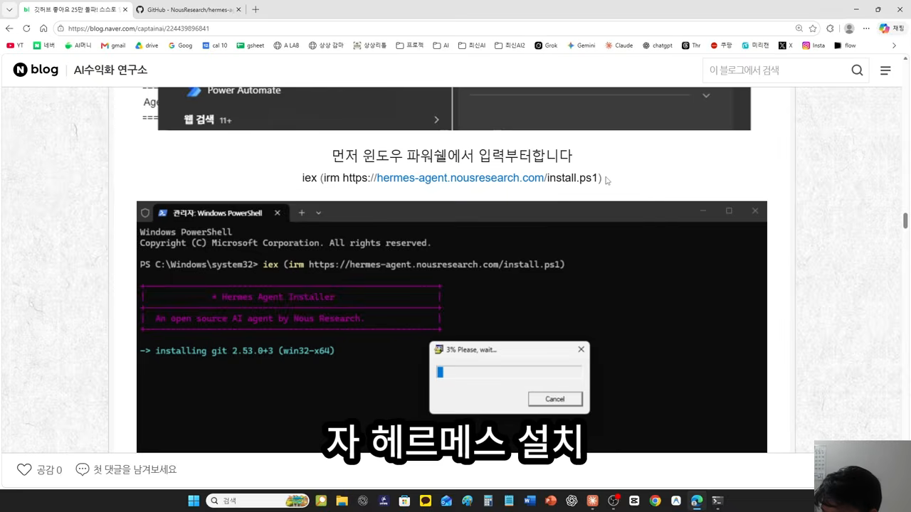
hermes라고 치면 돼요.
영상 07:55에서 보기
설치 후 PowerShell에서 hermes를 처음 치면 'Help improve Hermes?'라는 질문이 나와요. 사용 정보를 Nous로 보낼지, 내 컴퓨터에만 모을지, 아예 안 모을지 고르는 화면이에요. 기본값이 3번 No thanks라서 발표자는 그대로 3번으로 들어갔어요.
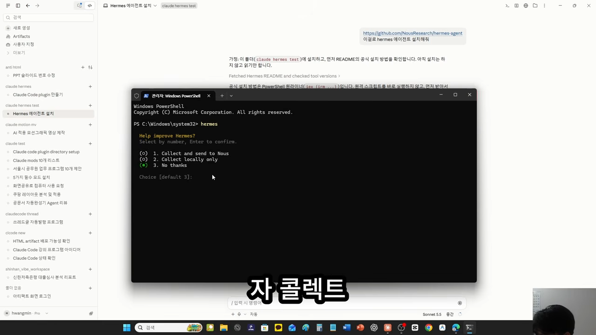
모델 설정은 Hermes 밖에서
발표자는 Hermes를 '하나의 플랫폼'이라고 설명해요. 그 안에서 어떤 언어 모델을 쓸지는 따로 정해야 해요. 그런데 Hermes 대화창 안에서 hermes model을 치면 설정 화면이 열리지 않아요. 아래 화면처럼 이 말을 질문으로 받아서, 웹을 검색해 Nous Research의 Hermes 4 모델 패밀리를 설명해 버려요. 답의 마지막 줄에는 지금 대화 모델이 Hermes가 아니라 stepfun/step-5-preview라고 적혀 있어요.
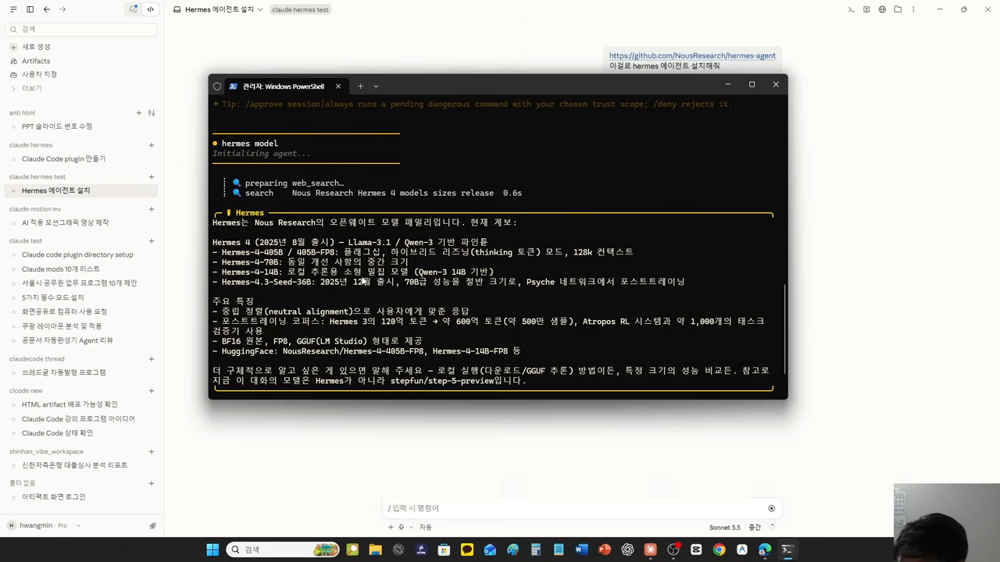
터미널에서 모델 고르기와 Nous Portal 연결
모델 설정은 여러 화면에 걸쳐 진행돼요. 발표자가 블로그 순서대로 따라간 흐름을 한 줄로 그리면 이래요.
flowchart LR A["터미널에서 hermes model"] --> B["1번 Nous Portal"] --> C["구글 로그인 후 코드 확인"] --> D["무료 모델 고르기"] --> E["추론 깊이 고르기"] --> F["hermes로 진입"]
- PowerShell을 새로 열고
hermes model을 입력해요 — Hermes에 들어가기 전, 프롬프트가PS C:\...>인 상태에서 쳐요. 모델 공급자 목록이 번호와 함께 길게 나와요 - 1번 Nous Portal을 골라요 — 발표자는 '지금 소개된 가장 최신 것'이라며 1번을 먼저 권해요.
- Nous Portal에 로그인해요 — 브라우저에서 Sign in을 누르고 구글 계정으로 로그인한 뒤 연결해요. 터미널에 로그인 성공이 뜨고, 터미널과 브라우저의 코드가 같은지 확인해요
- 무료 모델을 골라요 — 이름 끝에
:free가 붙은 모델이 무료예요. - 추론 깊이를 골라요 — 발표자는 기본값인 3번 medium으로 뒀어요.
모델 목록 화면을 보면 위쪽에 공급자 번호가 40번대까지 이어지고, 1번을 고르면 'Showing 9 curated models'와 함께 무료 모델 아홉 개가 나와요. 맨 위 stepfun/step-5-preview:free 옆에 '← currently in use'가 붙어 있어요. 발표자는 이 1번을 골랐고, 이름의 preview는 데모 버전 정도로 생각하면 된다고 말해요.
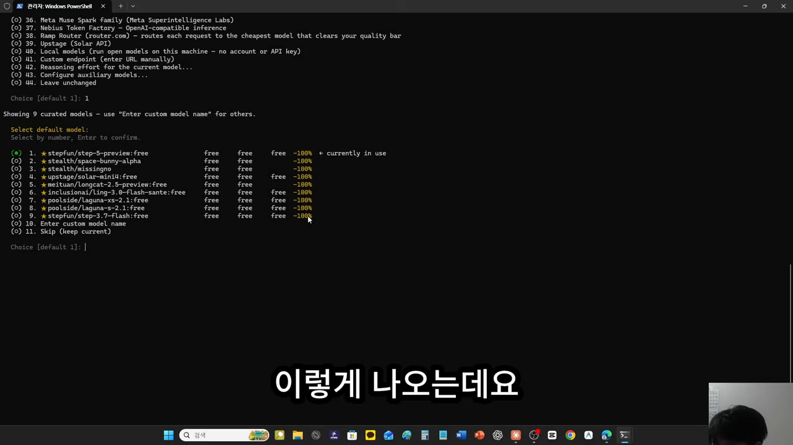
stepfun/step-3.7-flash:free를 골랐지만, 영상 실습은 1번으로 했어요.
영상 08:55에서 보기
모델을 고르면 'Default model set to: stepfun/step-5-preview:free (via Nous Portal)'이 뜨고, 바로 'Select reasoning effort'가 이어져요. minimal부터 ultra까지 일곱 단계와 추론 끄기가 있어요. 발표자는 이걸 '생각하는 깊이'로 보고 3번 medium을 골랐어요.
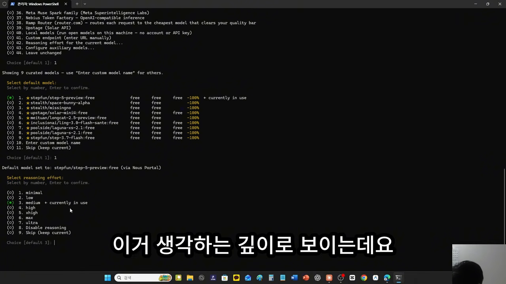
로그인은 Nous Portal 웹페이지에서 해요. 블로그 캡처의 왼쪽 위 잔액이 $0.00이에요. 발표자는 크레딧을 하나도 사지 않고 무료로 설정했다고 말해요. 오른쪽의 'Continue with ChatGPT'는 ChatGPT 요금제로 이용료를 대신하는 선택지인데, 영상에서는 쓰지 않았어요.
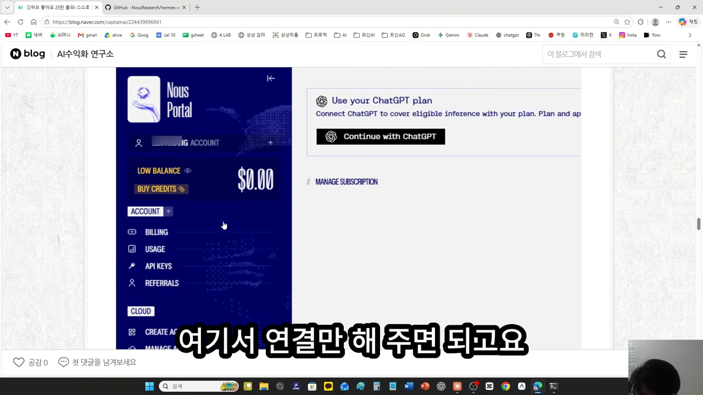
설정이 끝나고 hermes로 다시 들어가면 큰 HERMES-AGENT 글자 아래에 버전과 쓸 수 있는 도구·스킬 목록이 나와요. 왼쪽과 맨 아래 상태 줄에 방금 고른 step-5-preview:free가 보여요. 발표자가 "안녕"이라고 보내자 바로 답이 왔어요.
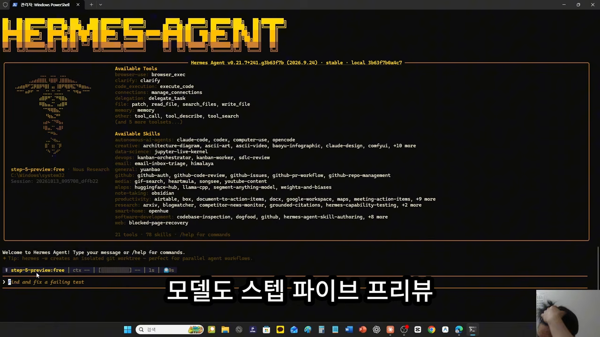
장점을 묻고 문서 네 종류 만들기
Hermes가 동작하는 걸 확인한 뒤, 발표자는 GitHub 링크를 다시 주면서 "많은 star를 받았는데 이유가 뭐야? 어떤 점이 좋은 거야?"라고 물어요. Hermes는 web_extract 도구로 저장소 페이지와 README를 직접 읽고 답해요. 첫 줄에 '253k star, 54.9k fork'를 적고, 한 줄 요약은 '살아 있는 개인용 AI 에이전트'예요. 이어지는 일곱 가지 이유는 아래 표로 옮겼어요.
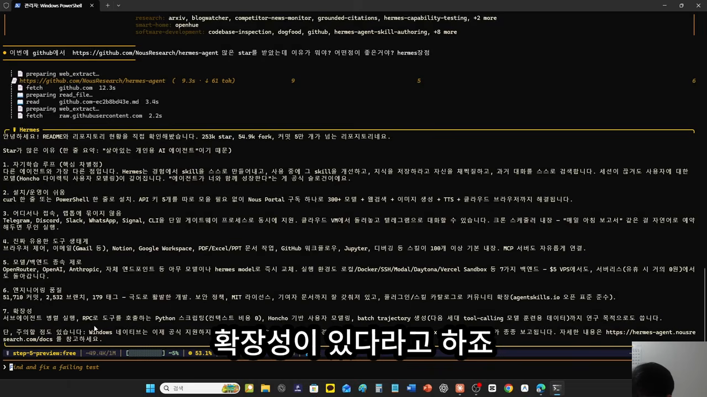
| Hermes가 꼽은 이유 | 화면에 적힌 근거 |
|---|---|
| 1. 자기 학습 루프 | 경험에서 스킬을 만들고, 쓰면서 고치고, 지난 대화를 스스로 검색해요. 세션이 끊겨도 사용자에 대한 이해가 깊어져요 |
| 2. 설치·운영이 쉬움 | curl이나 PowerShell 한 줄로 설치하고, Nous Portal 구독 하나로 300개 넘는 모델과 웹 검색, 이미지 생성, TTS(Text-to-Speech)를 해결해요 |
| 3. 어디서나 접속 | Telegram, Discord, Slack, WhatsApp, Signal을 한 게이트웨이로 지원하고, 크론 스케줄러로 '매일 아침 보고서'를 예약해요 |
| 4. 쓸모 있는 도구 생태계 | 브라우저 제어, 이메일, Notion, 문서 작업, GitHub 등 스킬 100개 이상이 기본으로 들어 있고 MCP(Model Context Protocol) 서버도 연결해요 |
| 5. 모델·실행 환경에 안 묶임 | OpenRouter, OpenAI, Anthropic 등 아무 모델로나 hermes model로 바꾸고, 로컬부터 Docker, SSH(Secure Shell)까지 7가지 실행 환경을 써요 |
| 6. 엔지니어링 품질 | 커밋 51,710개, MIT 라이선스, 플러그인·스킬 카탈로그 |
| 7. 확장성 | 서브에이전트 병렬 실행, 도구를 부르는 Python 스크립트, 다음 모델 훈련용 데이터 생성 |
폴더를 연결하고 문서 네 종류 만들기
다음은 실제 작업이에요. 발표자는 "바탕화면에 claude hermes test 폴더 만들어 놨어, 거기랑 연결해"라고 말로만 연결해요. Hermes는 폴더가 비어 있는 걸 확인하고, 앞으로 만드는 자료를 모두 여기 저장하겠다고 답해요. 이어서 "hermesagent를 사용해야 하는 이유라는 보고서와 기획서를 2장짜리로 docx, pdf, pptx, html로 전부 만들어 줘"라고 요청해요.
Hermes는 docx, pdf, powerpoint 스킬을 차례로 불러요. 그런데 파이썬 라이브러리가 깔려 있는지 확인하는 명령에서 노란 'Dangerous Command' 상자가 떠요. 선택지는 한 번만 허용, 이번 세션 동안 허용, 영구 허용 목록에 추가, 거부, 전체 명령 보기 다섯 개예요. 발표자는 2번 'Allow for this session'을 골라 이번 대화에서 나오는 명령은 모두 승인했어요.
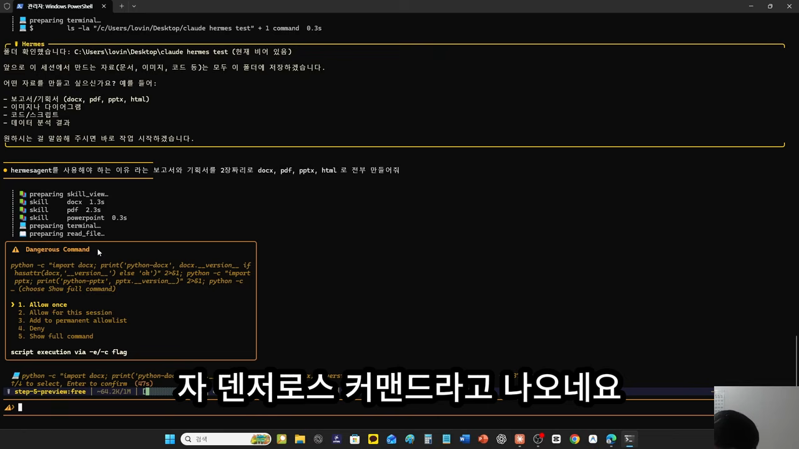
몇 분 뒤 폴더에는 기획서와 보고서가 docx, html, pdf, pptx로 하나씩, 모두 8개 파일이 생겨요. 위쪽에는 문서를 다시 만들 때 쓰는 build_docs.py와 미리보기 이미지를 담은 preview 폴더도 같이 생겨요. 왼쪽 터미널에서는 Hermes가 pptx 코드의 버그를 스스로 고치고, PDF(Portable Document Format) 쪽수와 한글 렌더링을 직접 검사하는 중이에요.
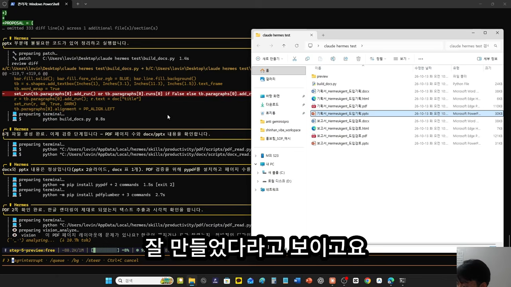
Word로 연 기획서는 'Hermes Agent 도입 기획서 — 자기학습형 AI 에이전트 업무 도입 실행 방안'이에요. 오른쪽 쪽에 1주부터 지속까지 4단계 도입 계획이 있고, 그 아래 '필요 자원 및 비용' 표에 서버 월 $5~$20, 모델 사용료는 사용량 비례, 소프트웨어 라이선스 0원, 도입 공수 약 1인 4주가 적혀 있어요. 발표자가 "공수까지 안내해 준다"고 한 부분이 이 표예요.
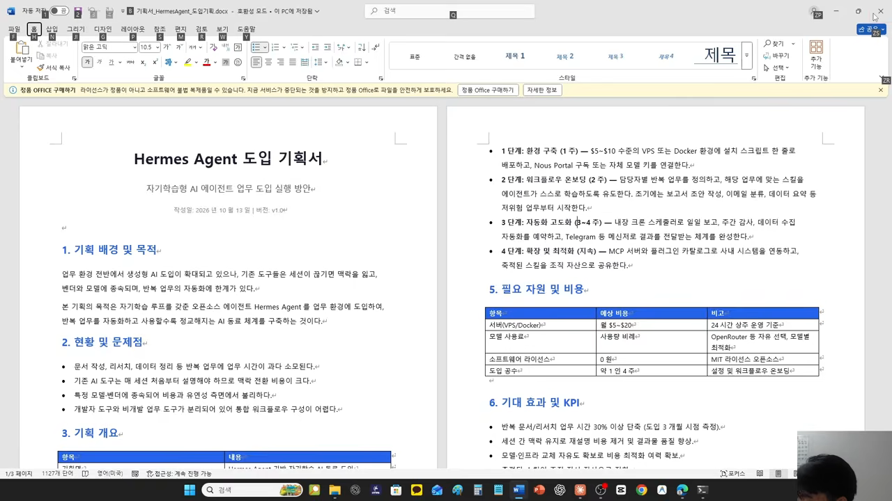
같은 기획서의 HTML판은 브라우저에서 바로 열려요. 파란 머리줄의 '기획 개요' 표에 기획명, 대상, 핵심 기능, 운영 형태, 라이선스가 정리돼 있어요.
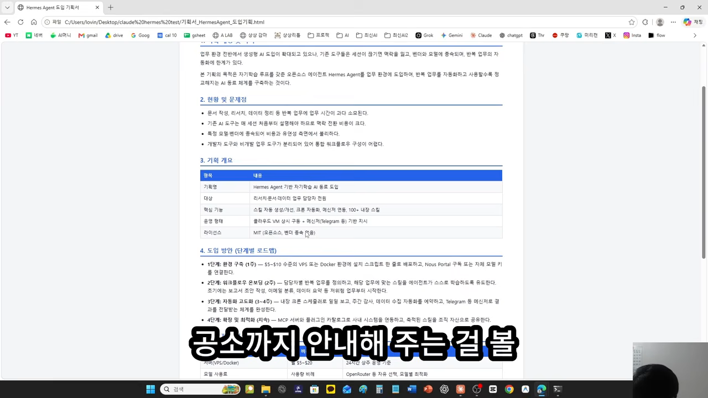
작업을 마친 Hermes가 남긴 검증 결과를 정리하면 이래요.
| 형식 | Hermes가 확인한 내용 |
|---|---|
| 두 문서 모두 A4 2쪽, 한글 글꼴 정상, 표 잘림 없음. 렌더링한 이미지로 눈으로도 확인 | |
| DOCX(Office Open XML Word Document) | 표 7행×4열 정상, 스타일 적용 확인 |
| PPTX(Office Open XML PowerPoint Presentation) | 16:9 슬라이드 2장(표지와 핵심 요약) |
| HTML | 인쇄용 스타일 포함, 브라우저에서 바로 열림 |
셀프 루프 테스트: 원고를 카드뉴스로
이제 Hermes의 핵심이라는 자기 학습 루프를 시험할 차례예요. 발표자는 "잘했어. 너의 강점인 셀프 루프 엔지니어링을 테스트해 보고 싶어"라고 보내고, 어떤 프롬프트가 좋을지 이어서 물어요. Hermes는 먼저 좋은 테스트의 조건 세 가지를 말해요. 기존에 없던 새 작업이어야 스킬을 새로 만들 이유가 생기고, 시행착오가 나올 만해야 교훈이 스킬에 남고, 두 번 반복할 수 있어야 스킬이 나아졌는지 볼 수 있어요.
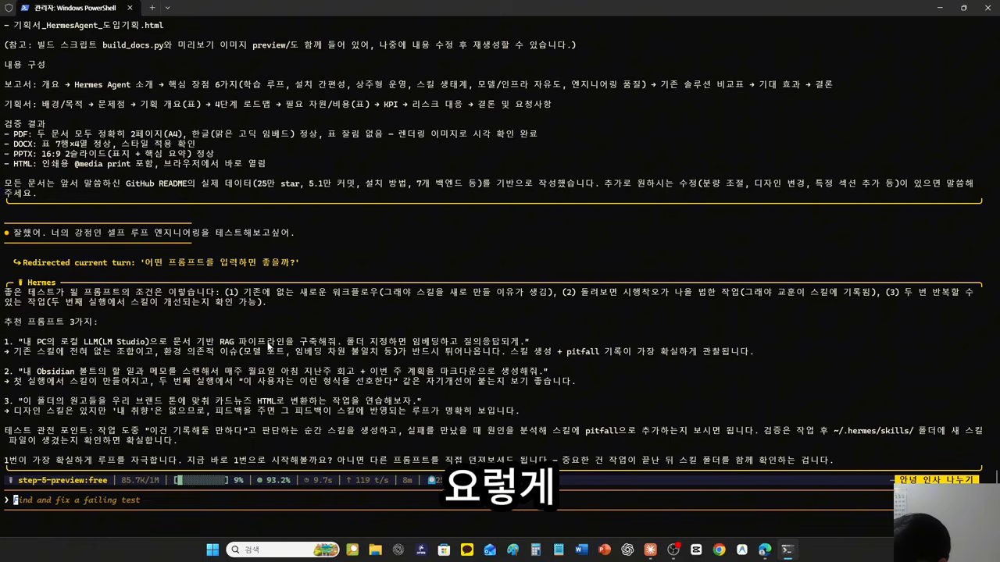
| 추천 프롬프트 | 루프가 보이는 지점 |
|---|---|
1. 내 PC(Personal Computer)의 로컬 LLM(LM Studio)으로 문서 기반 RAG(Retrieval-Augmented Generation) 파이프라인 구축 | 환경 문제가 반드시 튀어나와서, 스킬 생성과 실패 기록(pitfall)이 가장 확실히 보여요 |
| 2. Obsidian 볼트의 할 일과 메모로 매주 월요일 회고와 계획 만들기 | 첫 실행에서 스킬이 생기고, 두 번째에 '이 사용자는 이런 형식을 선호한다'가 붙는지 봐요 |
| 3. 폴더의 원고를 우리 브랜드 톤의 카드뉴스 HTML로 바꾸기 | 디자인 스킬은 있지만 내 취향은 없어서, 피드백이 스킬에 반영되는 게 잘 보여요 |
Hermes는 1번이 루프를 가장 확실히 자극한다고 했지만, 발표자는 LM Studio 설치가 어려울 수 있다며 3번을 골라요. 3번이 하는 일은 이렇다고 설명해요. 내가 "이런 식으로 고쳐 줘"라고 말하면 Hermes가 그걸 기억해서 스킬에 저장해요.
보고서와 기획서가 카드뉴스로
3번 프롬프트를 보내면 Hermes는 폴더의 보고서·기획서 HTML을 원고로 삼아요. 브랜드 톤을 따로 정해 주지 않았는데도, 앞서 만든 문서를 기준으로 작업을 시작해요. 화면에서 ls로 폴더를 확인하고 claude-design 스킬을 불러온 뒤, '카드뉴스 워크플로우로 1차 초안을 만들겠다'고 적어요.
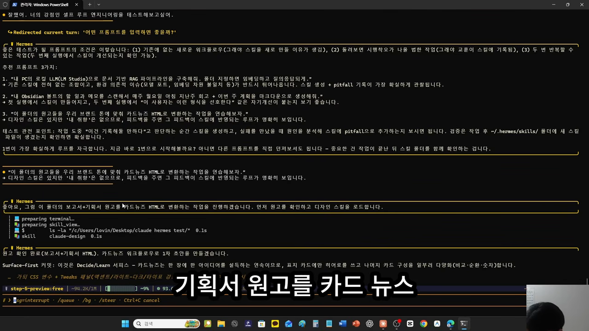
Hermes는 카드 내용을 담은 build_cardnews.py를 쓰고, 실행해 보다가 JS(JavaScript) 버그를 찾아 고쳐요. 오른쪽 폴더를 보면 앞의 8개 문서 옆에 카드뉴스_기획서.html과 카드뉴스_보고서.html이 새로 생겼어요. 발표자는 코드를 바로바로 보여 주는 점도 장점으로 꼽아요.
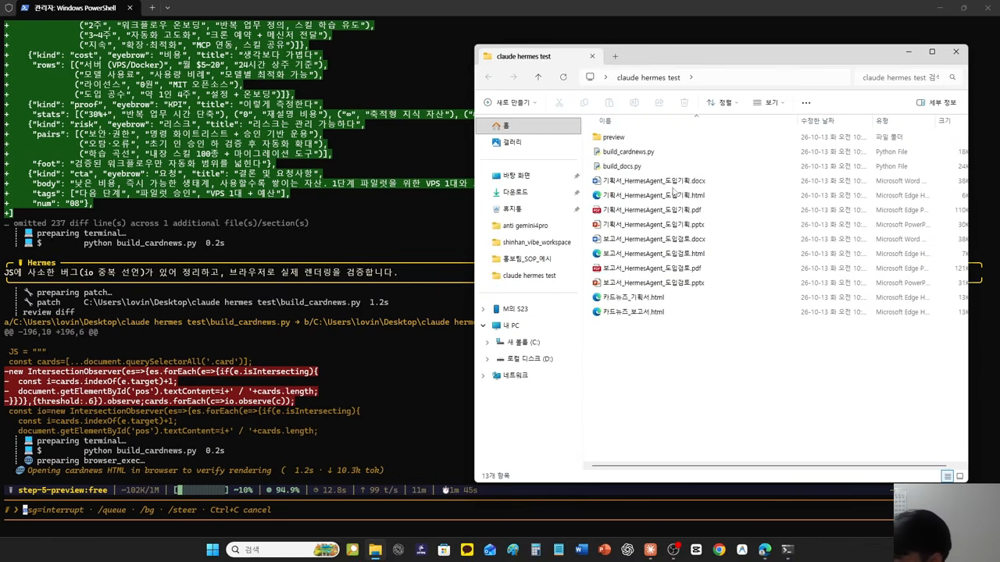
카드뉴스는 카드 8장짜리 세로 덱이에요. 오른쪽 위 'TWEAKS' 패널에서 톤과 밀도를 바꿀 수 있어요. 기획서는 '다크 + 골드' 톤으로 열렸고, 보고서는 '라이트 + 블루'로 보여 줘요. 발표자는 여기에 디자인 요소를 더 반영하면 완성도가 올라간다고 말해요.
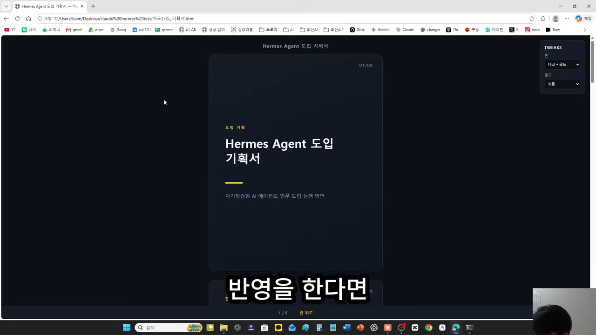
보고서 카드뉴스의 4번째 장은 'SETUP — 설치는 한 줄'이에요. 검은 코드 상자에 Linux·macOS용 curl 설치 명령이 들어 있고, 아래 세 줄에 Windows는 PowerShell 한 줄, API 키 5개 대신 Nous Portal 구독 1개, 웹 검색·이미지·TTS·브라우저까지 한 번에라고 적혀 있어요.
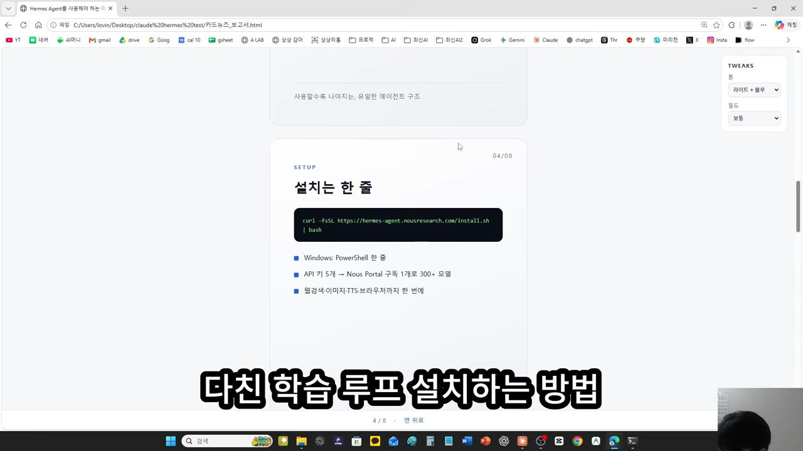
7번째 장 'PROOF — 숫자가 검증했다'에는 숫자 네 개가 있어요. GitHub 별 253K, 누적 커밋 51,710, 내장 스킬 100+, MIT 오픈소스 라이선스예요. 발표자는 이 장을 보며 많은 사람이 좋아했고, MIT 오픈소스로 운영되고, 자기 컴퓨터에 들어 있는 스킬이 100개가 넘는다고 짚어요.
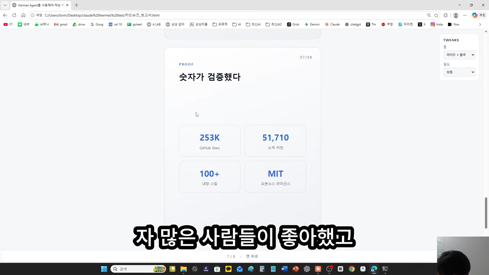
발표자는 이 흐름을 한 번 만들어 두면 다음에는 "카드뉴스 만들어" 한마디로 보고서·기획서 작성부터 카드뉴스 HTML까지 한 번에 돌릴 수 있다고 말해요. 하루 한 번 오전 9시에 만들어 보내라고 예약할 수도 있다고 해요.
정리: 일반 언어 모델과 무엇이 다른가요
마지막으로 발표자는 블로그에 정리한 Hermes의 장점을 보여 줘요. 표 왼쪽이 일반 언어 모델의 한계, 오른쪽이 Hermes가 더하는 것이에요. 네 줄이 영상에서 본 실습과 하나씩 맞아요. 파일을 읽고 만드는 건 문서 네 종류, 실행과 확인을 반복하는 건 검증 단계, 세션을 넘는 스킬은 카드뉴스 테스트, 예약 실행은 오전 9시 예시예요.
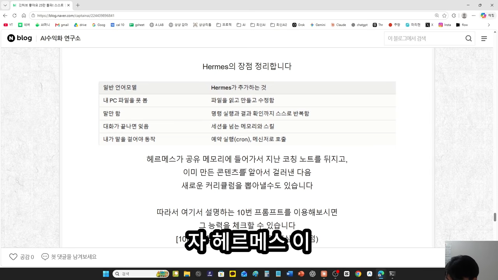
자기 학습 루프를 직접 확인하는 프롬프트도 블로그에 있어요. 작업을 끝낸 뒤 "방금 한 작업들을 다음에도 쓸 수 있도록 스킬로 저장해줘" 또는 "이번 세션에서 배운 걸 스킬로 만들어줘"라고 보내는 거예요. 블로그는 경험을 스킬 파일로 저장해서 언제든 다시 쓰는 게 자기 학습 루프라고 정리해요.
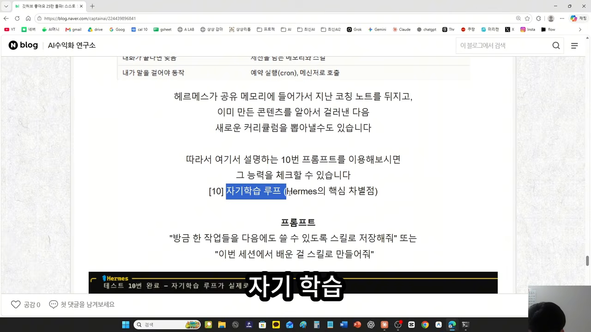
블로그의 마지막 소제목은 '1,300개 스킬과 백그라운드 컴퓨터 제어의 위력'이에요. 1,300개가 넘는 비즈니스 스킬이 이미 들어 있고, 백그라운드에서 마우스를 움직이는 컴퓨터 제어까지 된다고 적었어요. 발표자도 마무리에서 이 두 가지를 Hermes의 장점으로 꼽아요.
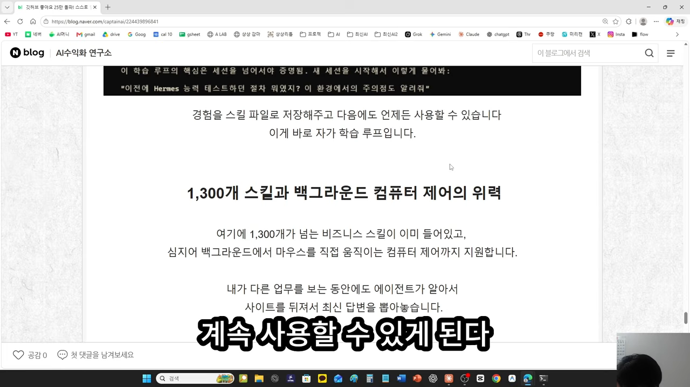
스킬 개수는 영상 안에서도 화면마다 달라요. 실제 설치 화면의 숫자가 가장 믿을 만하고, 나머지는 설명 문구예요.
| 어디서 | 스킬 수 |
|---|---|
| Hermes 시작 화면 (09:40) | 78 skills |
| Hermes의 장점 답변, 카드뉴스 7장 (12:50, 21:02) | 100개 이상, 100+ |
| 블로그 소제목과 발표자 마무리 (22:10) | 1,300개 |
발표자의 결론은 터미널 쓰는 데 조금만 익숙해지면 Hermes는 어렵지 않다는 거예요. 자기 학습 루프로 스스로 공부하는 직원을 하나 만들어 두고, 해 본 일을 스킬로 쌓아 계속 쓰라는 거예요. 다음 편에서는 Hermes로만 할 수 있는 작은 프로젝트를 보여 주겠다고 예고해요.